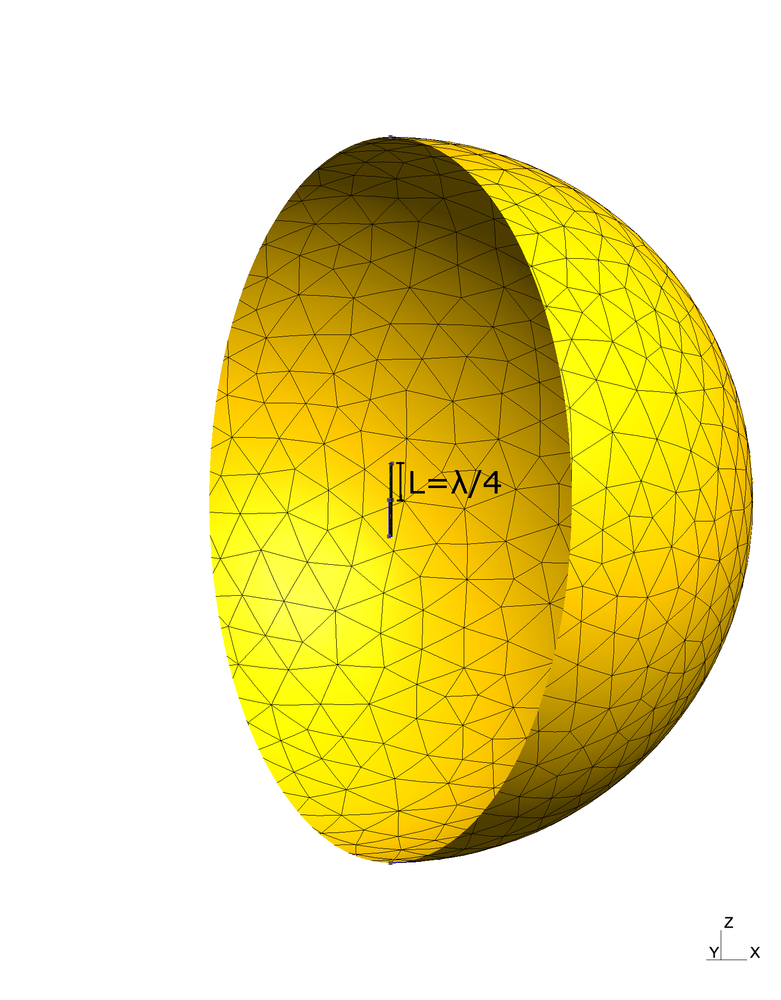
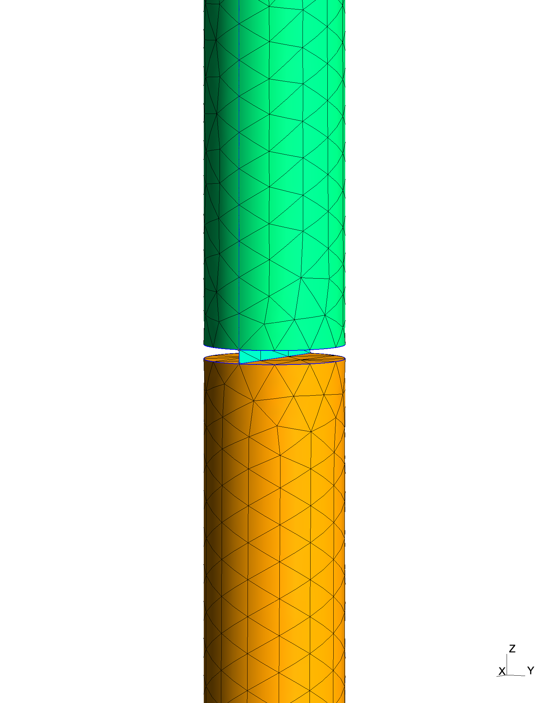
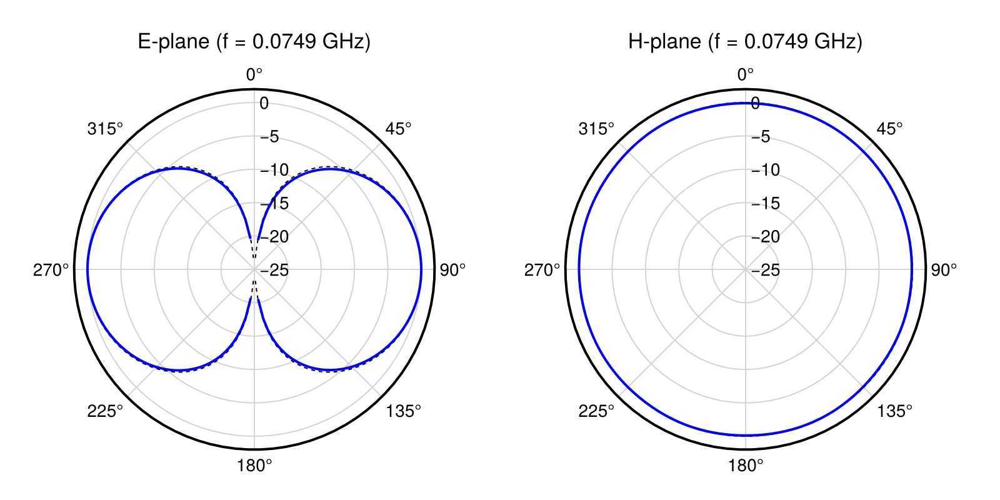
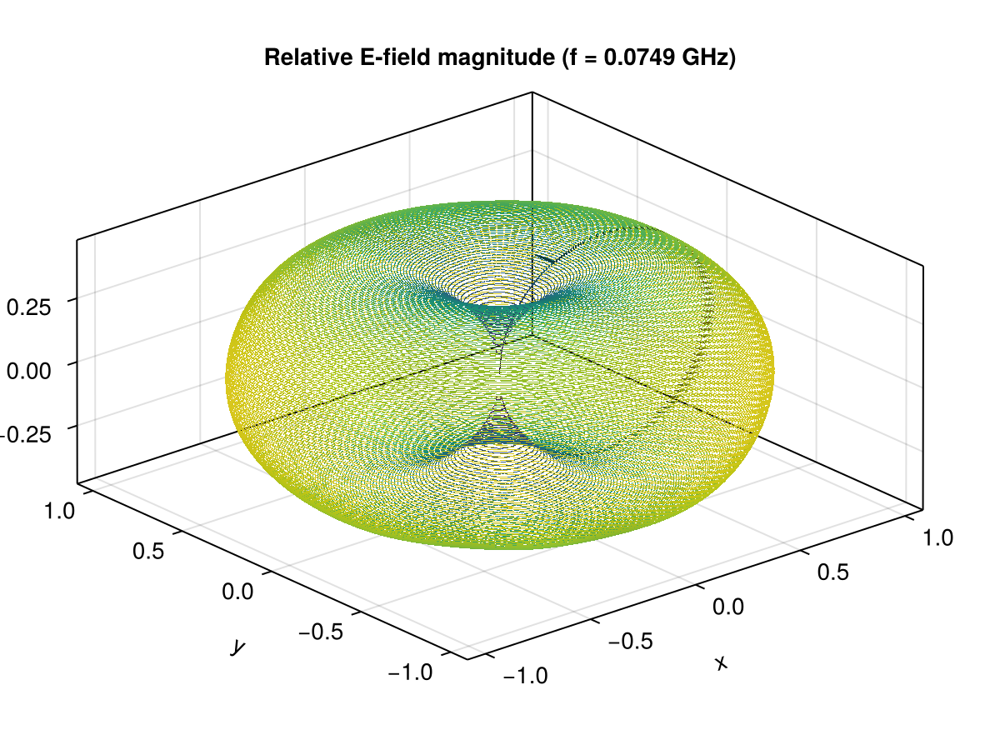

Dipole Antenna and Radiation Fields
The files for this example can be found in the examples/antenna/ directory of the Palace source code. In this example, we increased the number of sampling points from 100 to 64800.
In this example, we study a half-wave dipole antenna and analyze its radiation characteristics. The dipole antenna is one of the most fundamental antenna types, consisting of two conducting elements of length $L$ fed at the center by a sinusoidal excitation.
For an infinitely thin half-wave dipole, the problem can be solved analytically and the solution serves as our reference for validation [1]. In the wave-zone, the operating wavelength in free space $\lambda$ is twice the total length of the antenna ($\lambda = 2 \times 2L = 4L$). The normalized field pattern on the E-plane (xz-plane) is given by
\[E(\theta) = \left|\frac{\cos\left(\frac{\pi}{2}\cos\theta\right)}{\sin\theta}\right|\,,\]
while the pattern is isotropic on the H-plane (xy-plane).
We will model a dipole antenna with arm length $L$ and finite radius $a$, solve a driven problem at the resonant frequency $\lambda = 4L$ and extract the radiation pattern $P(\theta)$ with Palace's far-field extraction capabilities).
Problem Setup
The dipole is modeled as two thin infinitely conductive cylindrical wires with length $L = 1\text{ m}$ and radius $a = L/20 = 5\text{ cm}$, separated by a thin cylindrical gap of height $h = L/100 = 1\text{ cm}$. Given these geometrical characteristics, the operating wavelength is approximately $\lambda = 4\text{ m}$, corresponding to a frequency of $\nu = c / \lambda = 0.0749\text{ GHz}$.
The gap serves as the excitation point for the antenna. Rather than explicitly modeling the feeding circuit, we place a flat rectangular strip on the xz-plane that connects the two arms of the antenna. This strip functions as a lumped port to excite the system.
The surrounding medium is free space. In reality, electromagnetic waves would propagate freely to infinity. We model this by enclosing the antenna in a sphere of radius $r_{max} = 1.5\lambda = 6\text{ m}$ centered at the origin and applying appropriate boundary conditions to simulate the infinite domain.
The mesh is generated using Gmsh and consists of tetrahedral elements with appropriate refinement near the antenna structure. The element size increases with distance from the antenna, but is capped to ensure the wavelength is resolved by at least a few elements per wavelength. The mesh file is mesh/antenna.msh and is generated using the Julia script mesh/mesh.jl.
A visualization of the model and the resulting mesh is shown below.
 
The left image shows the outer domain and the inner antenna structure. The right image provides a close-up view of the gap region, where the rectangular port is aligned on the xz-plane and spans the diameter of the cylindrical conductors.
Configuration File
The configuration file for the Palace simulation is found in antenna_halfwave_dipole.json. The simulation is performed in the frequency domain using the "Driven" solver type, operating at a single frequency of $0.0749\text{ GHz}$.
Since we assume the metallic rods are perfect conductors, we impose perfect electric conductor (PEC) boundary conditions on their surfaces. To prevent reflections of electromagnetic waves back into the computational domain, we apply "Absorbing" boundary conditions on the outer spherical boundary.
The antenna is driven using the rectangular strip as a lumped port. This port lies entirely in the xz-plane, and by setting "Direction": "+Z" and "Excitation": true, we impose an electric field aligned in the z-direction across the gap.
We use the far-field extraction feature in Palace to extract electric fields at infinity. To do so, we add a "PostProcessing" section under "Boundaries" with the same Attributes as the surface with "Absorbing" boundary conditions and we choose a positive value for "NSample". A NSample of 64800 means that the far-field sphere is uniformly discretized with resolution of one degree on the equator (to preserve the uniform distribution, the resolution changes as one moves towards the poles).
This simulation benefits from the "ComplexCoarseSolve" option. This setting uses a complex preconditioner of the form P = [Ar, -Ai; Ai, Ar] rather than the default P = Ar + Ai, where A is the true system matrix with real and imaginary parts Ar and Ai. While the resulting system is four times larger, it preserves the coupling between real and imaginary parts which can be significant for problems with strong imaginary components. For this particular problem, this approach accelerates convergence by several factors, though at the cost of increased memory usage.
Analysis and Results
The simulation requires approximately 6 GBs of RAM and completes in a few minutes (depending on the hardware). The simulation produces a 160 MB postpro folder, which contains the electromagnetic fields that we will use to extract radiation patterns.
First, let us look at the far-field output. The postpro/antenna_halfwave_dipole folder contains a file, farfield-rE.csv, with the far-field electric fields for the all the target frequencies (in this case, only 7.49000000e-02 GHz). The first few lines of this file are:
f (GHz), theta (deg.), phi (deg.), r*Re{E_x} (V), r*Im{E_x} (V), r*Re{E_y} (V), r*Im{E_y} (V), r*Re{E_z} (V), r*Im{E_z} (V)
7.49000000e-02, 0.000000000000e+00, 0.000000000000e+00, +2.930940721527e-03, +9.180685842121e-04, +5.650494999979e-04, +4.087324611257e-04, -0.000000000000e+00, -0.000000000000e+00
7.49000000e-02, 3.500000000000e+01, 2.000000000000e+01, -4.890972029095e-02, -5.566639766008e-02, -1.681624433898e-02, -2.466672618017e-02, +3.620885041116e-02, +4.253468131010e-02
7.49000000e-02, 3.686989764584e+01, 0.000000000000e+00, -5.003961690433e-02, -6.237359292749e-02, -4.481234775960e-04, -1.824872742813e-03, +3.752971267825e-02, +4.678019469562e-02The plot_farfield.jl Julia script processes this file and produces plots polar for the E- and H- planes (xz/xy-planes) and in the 3D.
julia --project plot_farfield.jl model=antenna_halfwave_dipole file=postpro/antenna_halfwave_dipole/farfield-rE.csvThe results for the polar plot are shown below.

On the H-plane, we see the expected isotropic emission pattern for any of the extracted radii. On the E-plane, we see agreement with the characteristic figure-eight pattern of a dipole antenna, with maximum radiation perpendicular to the antenna axis and nulls approximately along the antenna axis.
If you are trying to reproduce this plot, but find that your plots are not as nice as the one above, you might have a missed a note at the top of this page: the example was run with 64800 sampling points instead of the 100 that the JSON file specifies. Change NSample to 64800 and run your simulation again. Moreover, the variable n_farfield in mesh.jl was increased from 3 to 10 for creating the mesh.
We can see the same pattern rendered in 3D as well

This plot shows the 3D relative antenna pattern representing the normalized strength of the electric field as function of the distance from the origin. Once again, we see the expected donut shape, with maximal electric field strength on the equator, and minimum along the z axis.
The plot_radiation_pattern.jl requires a number of Julia packages (including the plotting library). The simplest way to ensure that you have all the required packages is to use the Project.toml included with the examples. To install this environment, navigate to the examples folder and run
julia --project -e 'using Pkg; Pkg.instantiate();'All the subsequent times, just make sure to start Julia with --project from the examples folder or one of its subfolders.
Alternative: Short Dipole Using the Electric Current Dipole Operator
As an alternative to explicitly modeling the antenna geometry with a lumped port excitation, Palace provides an electric current dipole operator that represents an infinitesimally short current-carrying wire. This approach is particularly useful for theoretical studies or when the detailed geometry of the feeding structure is not critical to the analysis.
Background
An electrical current dipole can be thought of as the limiting case of a finite wire segment carrying current $I$ over length $\Delta s$ as $\Delta s \rightarrow 0$. The strength of the source is characterized by its dipole moment $\mathbf{p} = I \, ds$, where $ds$ is the infinitesimal length [2]. The source term in Maxwell's equations becomes
\[\mathbf{J}_e^s = \mathbf{p} \, \delta(x) \delta(y) \delta(z)\,,\]
where $\delta$ represents the Dirac delta function, indicating that the source is concentrated at a single point in space.
For a z-oriented electrical current dipole (short dipole) in free space, the far-field radiation pattern in the E-plane (xz-plane) follows
\[|\mathbf{E}_\theta|^2 \propto |\sin\theta|^2\,,\]
with omnidirectional radiation in the H-plane (xy-plane). This differs from the half-wave dipole pattern shown earlier, which exhibits a characteristic $\left|\frac{\cos\left(\frac{\pi}{2}\cos\theta\right)}{\sin\theta}\right|^2$ dependence.
Configuration and Running the Example
A complete example using the current dipole operator is provided in antenna_short_dipole.json. The configuration uses a "CurrentDipole" specification in the "Domains" section:
"Domains":
{
"Materials":
[
{
"Attributes": [5, 6, 7]
}
],
"CurrentDipole": [
{
"Index": 1,
"Moment": 1.0,
"Center": [0.0, 0.0, 0.0],
"Direction": [0, 0, 1]
}
]
}The key parameters are:
"Index": Identifier for this current dipole source (used in postprocessing output)"Moment": Current dipole moment magnitude $\mathbf{p}$ in A·m"Center": Coordinates of the dipole center position in mesh length units"Direction": Direction vector of the current dipole moment (automatically normalized)
where the material attributes 5 and 6 represent the volume of the cylindrical arms while the PEC boundary condition on the surface of these arms and the lumped port in the half-wave dipole example is removed. The outer spherical boundary with "Absorbing" conditions and the far-field postprocessing setup remain the same.
One of the key advantages of using the current dipole operator is the ease of changing the antenna orientation. By modifying the "Direction" parameter, you can align the dipole along any axis without needing to regenerate a mesh. For example, "Direction": [1, 0, 0] creates an x-oriented dipole, while "Direction": [0, 1, 0] creates a y-oriented dipole.
The following plots show the spatial distribution of the real part of the electric field in the yz-plane (left) and xy-plane (right), illustrating the near-field behavior of the short dipole antenna.


The far-field radiation pattern can be visualized using the same plotting script used for the half wave dipole, by specifying the short dipole model type:
julia --project plot_farfield.jl model=antenna_short_dipole file=postpro/antenna_short_dipole/farfield-rE.csv

The polar plots show the theoretical radiation pattern for a short dipole: the E-plane exhibits the $|\sin\theta|^2$ dependence decaying to zero on the dipole axis (θ = 0° and 180°) and maximum radiation perpendicular to the dipole (θ = 90°), while the H-plane shows the expected omnidirectional pattern. The 3D far-field pattern is also visualized:

In order to generate smooth, high-resolution plots as shown above and just like the half-wave dipole example, we used NSample=64800 in the JSON file and n_farfield=10 in mesh.jl to create the mesh.
References
[1] Stutzman, W. L., & Thiele, G. A., Antenna Theory and Design (3rd ed.), John Wiley & Sons, 2012.
[2] Heagy, L. J., Cockett, R., Kang, S., Rosenkjaer, G. K., & Oldenburg, D. W., "Defining the Electrical Current Dipole," EM GeoSci, https://em.geosci.xyz/content/maxwell1fundamentals/dipolesourcesinhomogeneousmedia/electricdipole_definition/index.html.